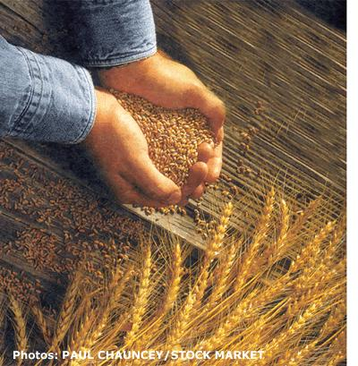
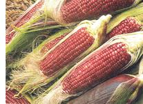
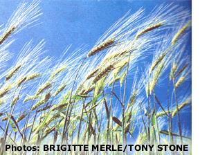
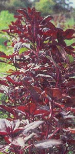
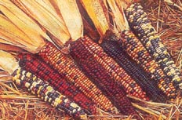
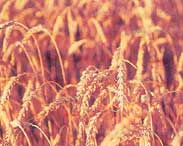

Growing Grains By: John Vivian
June/July 1999
Producing the staff of life... from scratch.
by: John Vivian
One or more species of grain can be produced in significant quantities on garden-sized plots of land almost anywhere that one or another variety of wild grass grows naturally. Evolved to regrow quickly following the combined hoof and-jaw predations of vast herds of grazing animals that once roamed the globe, the cereal grasses are widely adapted, tough, resilient, deep-rooted, fast growing and easily propagated. The hard, long lived grains they produce as seed can be grown, h arvested and milled in family sized quantities with simple machines and elementary hand tools. If properly cured and stored, they will keep for two or three years or more. Which means that you and I can provide our own organically grown, chemical-free flour, meal and whole grains if we make the effort.
But not many of us do. And small wonder: homegrown, ground and baked grain offers little economic advantage so long as generic brand squishy white bread costs less than a dollar a loaf, and we can buy stone ground King Arthur flour for about 50 a pound.
Yet it is deeply satisfying to be self-sufficient enough to serve family or guests a sturdy peasant bread or skillet baked corn cakes made from grain that you've grown and ground yourself. The whole grain flavor and nutrition of breads grown your own organic way, without harsh chemicals and on your own land, will be better than anything you can get from the supermarket. Guaranteed.
What's Involved
Other than lowland rice and North American wild rice, which require full or part time flooding, cereal grains are undemanding. They require full sun for optimum yield, but will tolerate cool and cloudy climates, poor soils, small amounts of water and a minimum of protection from pests and weeds. Indeed, most grains germinate in only two days after planting and wetting beating most annual weeds. And their large, nutrition packed seeds fuel rapid root and top growth. If planted densely enough, many cereal grains will shade and crowd out most annual competition before tiny weedlings have a chance to become established.
That's the good news. The not so good news is that the yield from cereal grain plantings is low compared to that of the average garden row of green beans, tomatoes, lettuce, broccoli or sweet corn.
Photo: COURTESY OF W. ATLEE BURPEE >
But garden produce is harvested at either the lush, green, growing vegetative stage (lettuce or spinach) or the fruiting or storage root swelling stage (tomatoes, carrots). Fresh produce is mostly plant sugar and water. Grain is the seed of the plant, dried down to a water content of just 12% at maturity. Its nutrients are converted from liquid plant sugars to dry starch in order to over winter and fuel new growth in the coming spring.
So yield per plant is measured in dry ounces, not fluid pounds. And the land area needed to grow a substantial crop is measured in acres, not square feet. You should get 30 or more bushels of clean grain per acre threshed to free it from stalks and outer husks and winnowed to blow away the chaff.
Each bushel of whole grain wheat weighs 60 pounds and nearly all of it is converted to food if milled whole. That's the better part of 2,000 pounds or a short ton of grain per acre.
An acre comprises 43,000 square feet in area the equivalent of 43 approximately 30' x 30' hand-tended backyard garden plots. If you till up a new garden sized plot and plant it to winter wheat this fall, you will harvest 1/43 of a ton just shy of a bushel or some 50 pounds of grain next May or June.
You've probably harvested that weight in tomatoes from a single row. But tomatoes are mainly water and sugars, providing 60 calories of food energy per cup. Grain is concentrated energy, containing 400 calories per cup. The single bushel harvested from a 30' x 30' home-sized garden won't fully nourish an individual or provide 40% of family nutrition for more than a couple of weeks. But it will let you serve super-fresh, all homegrown bread, rolls or pan bread for holidays, parties and Sunday dinners over the course of a year.
Ground Preparation, CAre and Rotation
A farm tractor and implements are practically essential for tending an acre or more of small grain, but their purchase, care and fueling can't be justified by a smaller plot. Sit-on lawn and garden tractors are designed to mow large suburban lawns and do offer accessories such as mini-disc sets and small plows that are fine for playing farmer in a small garden. But they lack axle width, tire height, weight and torque/power to handle even fraction-0f-an-acre-sized fields, and new ones cost as much as a good used farm tractor. And don't plan to use even the biggest rotary tiller to cut more than a quarter acre of sod; it'll take several long, slow passes to get the job done. If you need to plow more than a quarter acre of new ground, rent a Boomer, Kubota or JD 4000 series with land plow, discs and harrow, or hire a neighboring farmer.
Before planting a cereal grain, lime your soil as needed and work it until it's as finely tilled and weed-free as possible. You can cultivate row-planted corn and drilled grains, but unless you use selective herbicides, it's impossible to weed small grains planted to optimum density by broadcasting the seed. Especially important is to kill off all perennial weeds-particularly the persistent meadow grass called witch grass or quack grass that fills sod with a snarl of tough, white underground jointed stems. If you try to plow it under or till it in, you'll just cut the stems into pieces that'll all make new plants. (You can, however, put this nuisance weed to work by grinding it into flour. See page 58.)
The best rule is to put grain into land that has been cultivated for at least a year. One solution is to plant your grain in an established garden plot and put your vegetables into new ground that will be worked constantly through the growing season.
Or plow new ground in late summer when plant growth has slowed. Disc or till it several times to kill sod and weeds and plan to use it as next season's vegetable garden.
In early fall, plant to winter wheat, rye or oats. The grain will sprout and make strong root growth over fall and winter. Next spring, the hardy grass will sprout and outgrow what weeds remain. You can treat it as green manure and plow it in early, then plant your sweet peas. Or let it mature and, following early summer grain harvest, till in roots and straw. Then set in tomato plants and plant the beans and sweet corn. Plant last year's garden plot to a warm-weather grain such as field corn.
Grain land will appreciate all the compost you can give it. Apply organic concentrate fertilizer if you can afford it; follow directions for growing lawn grass.
A better solution all around is to rotate your land among three or four crops, including nitrogen-fixing legumes and green manures, each of which replenishes nutrients used by the others. Corn, for example, is an extra-heavy nitrogen feeder (but it produces three times the nutrients of a small grain: 90-plus bu/acre as opposed to 30-plus bu/acre of wheat). I have always grown garden-sized to quarter-acre plots of field corn within a three or more year rotation. The corn is followed by a green manure legume such as alfalfa or field peas, followed by a small grain or mixed vegetables. If time and space permit, I continue with buckwheat or other green manure, followed by a fallow year or two in which nature plants what the soil needs.
In soybean country, farmers rotate corn, soybeans, wheat and hay. In the Northeast, a mix of corn, oats and hay/fallow is popular. In the western wheat lands, corn, wheat, clover and grass/fallow are rotated. On irrigated western land, three years of alfalfa are often followed by potatoes, fertilized sugar beets and oats. In cotton country, corn and cotton are alternated with a legume such as alfalfa hay, cowpeas or soybeans.
See your County Agent (or County Extension Office) for a good schedule for your area and land, and substitute a fallow year or a legume for commercial crops such as cotton or sugar beets. You can substitute mixed garden crops for hay or grass any year.
Planting
Local feed stores will carry varieties of cereal grain seed that are best suited to your soil and climate. Most will be high yielding, soil-depleting, but delicate hybrids. Old-fashioned open-pollinated varieties can be found in garden seed catalogs and from seed savers.
For planting rates, see discussion of individual grains, starting on page 54. For small plots, you'll get highest yield by doubling the recommended rates.
Small-grain seed does best if planted an inch and a half deep in well-prepared soil that is kept evenly moist through the growing season. This is deeper than we plant most garden seeds.
The cereal grasses have a single cotyledon that remains below ground. It sends a hollow sheath above ground and the narrow grass leaves and stem emerge from this sheath. It benefits from support of the surrounding soil. Seeds planted under dry land conditions also benefit from being deep enough to stay moist, even if the ground surface is bone dry.
The best way to get seed deep enough is to use a drill that drops them in a trench or hole. Farm scale drills are expensive and require a sit-on tractor to pull them. One row drills are available for large walking tractors (such as our 25 year-old Gravely 7.5). The patterns to make 1920s-eradesign, cast-iron, one row rotating plate seed planters from the old Planet junior line are still extant; several garden supply firms have sold these fine old small farm tools over the years,
though the only place I have seen them this year is in the Peaceful Valley Farm Supply Catalog (see "Sources," page 98). Listed as Cole Planet Jr. Seed Drills, they come in tractor pulled and hand pushed versions for less than $500 (well worth the price if you have a very big garden).
Lightweight, hand-pushed rotating wheel planters made from plastic and aluminum are available for well under $100. 1 tried one years ago and found it too flimsy to work in anything but powder fine, bone-dry, hobby-garden soil, and unable to handle anything but large corn, pea or bean sized seed. But they've continued selling for 30 years, so they must work for some gardeners.
Both Cumberland General Store and Lehman's sell a hand operated big-seed drill that functions like a cross between a pogo stick and a clamshell post hole digger in reverse for around $50. It sows at a slow walking speed, but works fine for garden-sized plantings.
The timeless way to plant small grain is to prepare the land, then sling a fabric sack over one shoulder and hand broadcast grain in wide swaths. With practice, on learn to manipulate hand and fingers to spread seed evenly and to cover all the ground. Seed can be left on top of the soil in the hope that rain will keep it moist and the crows won't eat it all. But better is to rake, disc or harrow it in. The easiest way I know to finish planting is to fix a flat board spikeless harrow or drag on a pair of chains behind the walking tractor and stand on the board as it is pulled over the soil, rolling seed into trenches or ridges and smoothing and firming soil over them.
Small Scale Harvest
On the farm, small grains are harvested by huge self-propelled combines that snow and thresh in a single pass. But for millennia before the machine age, and in low-tech societies still, grain was and is harvested entirely by hand. The crop is left standing in the fields until kernels are almost-but not quite-dry enough to separate from the husk and follow their natural inclination to self-seed, by popping loose when jostled by the wind.
To assure that grain is mature enough to harvest, if not entirely cured to storage quality, be sure the stalk has ceased nourishing the seed head and that it's begun to die back. It will have lost its fresh green color and will be less supple than when growing. To test the kernels, bite one: It should be soft enough to dent but not so soft that you can bite through easily.
Cut while still semigreen; the kernels will stay on the seed head. Small grains will cure rapidly if cut, sheaved, shocked and left in the field during dry fall weather. Shocks must be put under cover if prolonged rain threatens. Moldy grain is worthless. If infected with ergot mold, rye becomes toxic.
Corn can be left to dry on the stalk and in the water-repelling husk, or can be pulled, husked and dried on vented shelves or in a crib.
Small amounts of grain can be "topped" the ends of stalks sheared off and dropped into a harvest sack. It can be threshed in the sack by rubbing stalks between the palms of horsehide gloves. Or well dried, mature and loose kernels can be removed from standing stalks by shaking into a sack or by using a harvest rake similar to a blueberry rake a wooden scoop with a coarse-toothed comb fastened at the lip. Johnny's Selected Seeds sells a metal rake designed for harvesting chamomile blooms; it works on seedpods as well. If the teeth were narrowed, say by addition of a steel currycomb at the toothed edge of the lip, it would harvest small grain.
lost commonly, grain is hand harvested stalk and all-by harvest knives that pass through the stalks close to and parallel to the ground. Cut stalks are collected by the large handful, called a sheaf. Sheaves are bound near the top with supple barren tillers-secondary stems that grow from most grain plants' bases (you've seen them on sweet corn) but that fail to make seed. Two or three sheaves are stacked against one another-tops intertwined and bottoms lodged in the stubble. Then, other sheaves are "tepeed" onto them to form a shock large enough to put both arms around and are bound near the top.
The most sophisticated harvest knife is the long-handled, two-hand scythe, which permitted the 18th-century harvester to stand (or, more properly, to stoop) while mowing and stacking an acre an hour. Wooden fingers or frame cradles were attached on the off side of some grain harvest scythes to catch the stalks for easy one-handed pickup.
Short-handled harvest knives vary in size and shape. The machete and other heavy, long knives are used to cut the large stalks of sugar cane, sorghum and corn. The traditional harvest tool for small grains is the grain hook or sickle-a curved knife fastened at a shallow right angle to a wooden handle.
For small lot grain or cane harvesting, I remain loyal to the Collins made U.S. M-1 machete I was issued by the Marine Corps. Using it or a hooked harvest knife is stoop, duck-waddle, or scoot-along-on your-butt labor. Pick your torture.
Power - moving
For plantings measured in acres or significant fractions thereof, hand mowing is for masochists only, in my sciatic view. MOTHER's Gravely has a front-mounted sickle bar mower attachment hat cuts with a row of sharpened teeth, which move back and forth over a ground-hugging floating bar of fixed it. But its 700 pounds, not to mention he operator's own clodhoppers, can't help but crush the grain, losing more ham a few kernels in the stubble.
You can get smaller dedicated power sickle bar mowers, as well as still-operating antique horse-drawn sickle bar mowers that sport a seat so you can ride on the job. These go well with still-common, still - functioning horse-drawn hayracks that collect grain stalks in a huge set of curving spring teeth and dump the load by being raised up with a handle. Keeping a matched pair of these 18th-century horse-powered harvesting machines in operation into the 21st century just might be enough of a reason o take on a draft animal.
But my nominee for the best small plot small-grain harvester ever is the DR Trimmer-Mower from Country Home Products. This machine is a wheeled, amply powered string trimmer. It lacks power to the wheels, so you do have to push it. But it is nicely balanced and the revolving string head cuts a wide swath through any small grain. You could power mow grain with a little handheld string trimmer, I suppose, but the stalks and seed heads will fall and get chopped and snarled as you go. The DR lays the stalks to one side in a neat windrow so they can be raked or picked up and sheathed easily.
Neither string cutters nor sickle bars will cut standing corn, sorghum or other canes. I pull green ears and feed fresh stalks to the livestock. Flour corn is left to dry on the stalk. After the harvest, the stalks are hand-pulled and shredded or piled in long windrows and burned. If left standing over winter, they are the very devil to till in come spring and, unless a good dicing is scheduled, the tangled mess they make of tiller tines volunteers the plot to rest fallow for an entire year.
Threshing
The kernels of cereal grasses develop inside several layers of bran and husk, which nurture them as they sprout from stems or cobs. Kernels of oats and some other species are accompanied by ornamental awns (whiskers) and all manner of inedible matter that is loosely termed chaff. Kernels must be freed from this stuff in a mechanical process called threshing. Commercially today, easily dehusked grain such as wheat is threshed by being bashed with flails as it moves on a conveyor belt or inside a revolving drum. Other grains such as barley or conventional oats are so tightly held in their husk that they must be steamed or ground in a mill to be freed.
More traditional and easiest to manage on a small place is to lay the grain out and whack it with hand flails-foot long lengths of wood attached with leather thongs to a longer handle. Or else, you can hold sheaves by the ground end and bang seed heads over a "threshing horse"-a big log, for instance, or a gallon oil drum. The stalks, once kernel free (and properly termed wheat straw, oat straw or whatever) are bundled and set aside for livestock bedding or straw-tick mattresses or even for building a straw-sheaf house, while the grain is taken to be winnowed.
Winnowing
Grain is winnowed, or separated from the loose hulls or chaff, by tossing or dropping newly threshed grain in a brisk wind (or, for more control, in front of an electric fan or blower). Large (three-foot diameter) round, shallow baskets are used for threshing in many different cultures. In a maneuver that takes practice, the grain is shuffled out to the far rim of the basket and flipped up on a breezy day, then caught as it falls back. The dry matter is separated from the heavier grain kernels and carried downwind. Chaff contains nourishing bran and is commonly swept up and used as livestock feed.
Polishing
Our advice? Don't Polishing grain is a sin against nature if ever there was one. Fortunately, there is no practical way to polish grain on a small scale.
Grains exist to sprout into young plants, so they've evolved to keep a tight hold on their stores of concentrated, water soluble carbohydrates (starch) and their live plant embryos (germ), by enclosing them in tightly held protective inner husks (bran). Most of a grain's vitamins and minerals are contained in the fibrous bran and in the oils of the living germ. If freed from the protective husk, as when milled, the oils can become rancid and the starch can mold or dry out, while the bran adds a chewy roughness to the grain. For long storage of the milled product and to give a more refined appearance and texture to the cooked dish, commercial producers have long done their best to reduce grain to bleached-white, empty carbohydrates. Enrichment of polished rice and white flour was federally mandated decades ago to improve child nutrition, particularly in impoverished areas of the country such as Appalachia and the Mississippi delta. Fair enough, but didn't anyone think of leaving the original nutrients in place?
Grain Storage
If the weather lets you keep shocked or standing small grain in the field till it is a uniform light tan, with no green stems even in the middle of the shock and stalks of standing corn sound hollow when you tap them, it will almost surely be storage dry at 10% to 15% moisture content. Flour corn kernels should be hard, with a characteristic dent in the middle of the upper surface. Small grain should be firm, but a little plump in the middle. Tooth test it: Grains should dent a little, but not much. If they squash and are easy to bite in half, they need more drying. Move shocks into the barn if you can; stack upright on the floor or hang them head sup from the overhead. Or thresh and lay small grain out in a thin layer on a tarp or on screen shelves someplace where the air moves freely. Pull corn ears, shuck (but leave husks attached in a rosette) and lay out or bag. The husks will aid in air circulation.
It is easiest to shell (remove kernels) from corn ears as grain is needed. If done all at once, you'll have bags of grain to store, and you'll find that a large pile of shelled cobs and husks is hard to dispose of before it gets rained on and begins to rot, unless you have a powerful shredder grinder and plenty of ornamentals in need of mulch, or a spreader to put them on the land. Shelled a few at a time as needed, dry cobs find their way into the wood stove as kindling.
Husking knives and hand-shellers used by the nonelectric Amish are always a possibility. Be sure to use gloves when removing sharp-edged dry husks. You can shell dry corn by rubbing two cobs together briskly; one will remove kernels from the other. Have plenty of hand lotion at the ready.
Commercial granaries use huge fans to move air over drying corn and small grains. If air in your drying shed is humid, or if you see mold growing, you may want to apply dry heat via an electric heater with a fan, a kerosene salamander or heat lamps.
During dry fall and winter weather, grain is best stored in a weather-proof, outside, slat-sided crib that keeps blowing rain out, but permits a constant floe of air (see page 60). Leave corn on the cob with husk pulled down, but attached for bulk storage. Cob corn or any loose grain can be kept in coarse-meshed sacks. Ideal are the 50-pound, woven poly-ribbon sacks that stock feed comes in. Or use poly-strip sandbags from an Army Navy surplus outlet or mail-order catalog. To minimize mold damage, fill bags halfway and lay out on shelves or a dry floor in single layers. Turn daily. Set up on end if moisture shows under any. Flip to rest on alternate ends daily. If any mold shows, lay out a large tarp and pour grain out in a single layer during dry, sunny weather. Remove and discard any kernels that are clumped with white mold roots or that show dark spores. Except for rye (which can be infected with toxic ergot), the remaining grain can be washed well and consumed, oven-dried or parched in hot oil and put into cold storage.
For next year's seed, select the fattest, thickest seed heads or kernels. Dry them especially well. Store in a cool place where they will experience at least several months of freezing weather, as many seeds need cold during winter dormancy. An open-mesh bag hung where the mice can't get it is best if you doubt the seed's dryness. Don't store inside where it is warm or you are asking for weevils.
Milling
An individual whole grain of rice or corn is called a kernel, while wheat, oats and other small grains are called berries. Whole kernels or berries can be boiled and eaten as stick in our teeth (as well as to your ribs) groats. Crushed by hand or in the rollers of a cracking or rolling mill, they become faster-cooking cracked grain gruel. Oatmeal, or rolled oats, falls into this category.
In a grist mill, they are forced from a hopper by an auger to be ground between ridges cut into the face of a set of milled steel, cast-iron or gritty stone burrs. Distance between grinding burrs is easily adjustable. Wide-spaced burrs produce a coarse meal such as cornmeal or dehulled (like hominy) wheat farina. With burrs closely spaced, any grain from wheat to rice to corn can be finely ground into flour. Metal burrs will grind anything, though not as finely as stone burrs, which can clog if milling an oily seed such as peanuts.
A modern high-capacity semicommercial stone mill such as CGS's Meadows 30" burr Mealmaster (which retails for $6,900) will fine-grind an acre's output of corn or wheat-a good 30 bu-in an hour.
Smaller "community-sized" mills such as Meadows 1-hp stone mill is sold, with electric motor and shields, by Lehman's for about $1,200. It can fine-grind a pound of grain in 30 seconds.
Home-scale electric mills in the under$500 range such as Retsel's X-hp MilRite can stone-grind a cup of grain cake flour fine in less than two minutes.
There is a variety of imported and U.S.made old timers such as the original Quaker City, as well as innovative new mills, including Lehman's exclusive Our Best Grain Mill, that fall into the $150 to $250-plus range. All are capable and many offer a choice of hand or electric power, stone or steel burrs, and come in a variety of materials and capacity ranges.
Large, long-handled, heavy at 15 pounds, under $100, cast iron hand mills on the Quaker City pattern, such as the Universal Mill or Corona, are imported from Medalin, Columbia. Their relatively crude, sand-cast-iron burrs take two to three minutes to grind a pound of grain to cornmeal consistency, and half-again longer or more if you put it through twice to produce bread flour.
Compact herb/nut-grinder-type mills. such as the handy little Back-To-Basics mill with its easily cleaned stainless steel burrs, will grind a pound of grain into flour in a single easy pass, but need eight or ten minutes to get it done.
In a class by itself is the uniquely powerful Vitamin food-processor/juicer/blender/universal mill. Rigged for dry grind, it will make pancake flour from two cups of whole grain in 90 seconds. Rigged for wet, it will mix and pour the batter, then clean itself afterward.
Do your homework and be sure to check the Internet, too-sic your search engine on "grain mills." One warning: many of the gristmill makers are small firms that strive for quality rather than quantity production. With the Y2K scare selling self-sufficiency apparatus like never before, manufacturers of several of the very best models are months behind at this time (summer of '99) and not foolish enough to add capacity to meet a panic-fueled demand that will evaporate in a few months.
So check availability if you need fast delivery. Or wait till the Y2K panic (it has long been our contention that Y2K is more marketing tool than root of global catastrophe) passes and buy a used mill.
Don't grind any more whole grain than you'll use in a week or it may sour, mold or become weevil-infested. To prevent these problems any other way, you'd need a whole arsenal of toxic chemicals.
TIME REQUIREMENT
Using a powerful rotary tiller to prepare the land and a powered string trimmer to cut small grain-and in between doing all the planting and cultivating by hand or with the wheel hoe I put in close to four hours per bushel of corn or wheat: at least one hour each to plant, harvest, thresh and winnow. Assembling the equipment and putting it away more than doubles the time required. I need a half or even a full day to accomplish each task (and I could do several times the land and crop in that time. Moral: grow more rather than less grain once you get into it.)
If all of this seems like a lot of time and effort to turn out a few loaves of bread or bowls of porridge-which modern farm and food technology can produce in minutes and for pennies a pound you are correct. Taut it takes effort to be able to feed (air family no matter what might happen out in the world. And there is no more basic place to begin than growing good bread from scratch.
Amaranth
Amaranth is not a grass, but a four-to six-foot-tall, broad-leafed plant that produces edible (when cooked) greens, plus highly ornamental plumes, which develop legions of tiny round seeds more nutritious than any cereal grass. Good for people who are allergic to wheat or corn.
Sow the seed in flats in early spring. Thin the slow-growing seedlings to the most robust individuals in a variety of colors and heights (stems contain traces of the red, orange and yellow that occur vividly in the plumes). When soil is thoroughly warm, weed well and set out seedlings one to two feet apart, in rows spaced two to three feet (the closer set, the better plants will resist "lodging," or falling over in wind or rain, a serious problem that can wipe out your grain).
Cultivate closely till plants are growing rapidly. Water only if soil is dry for several inches down. Harvest in late summer, any time after a tap on plumes loosens seeds. It's best to wait till after frost so seeds are bone-dry. Hand-harvest by cutting seed heads into a sack or bucket. Dry on a tarp if needed.
Shake or flail seed heads to remove seed. Sift through two screens: one of coarse hardware cloth (1"-mesh or so) and the second a coarse kitchen strainer or X"-mesh window screening. During screening or later, rub seed between your palms to scarify the thin outer coating. This will winnow away with a light wind.
Whole or crushed seed can be boiled for porridge using a 1:2 grain-to-water ratio. It will pop, too, in a hot pan with no oil; add one spoonful at a time, stirring constantly. Takes only a few seconds unless too old and dry.
Grind to flour on fine setting. Substitute for wheat flour up to 50% in panbread recipes. Experiment in combination with cornstarch, tapioca and arrowroot flour for hypoallergenic muffins and nut breads. Amaranth lacks gluten, so it won't make good yeast bread unless mixed with wheat flour.
Quinoa is another ancient Andean plant that produces abundant tiny seeds. Grown, harvested and used the same as Amaranth, it's available from Seeds of Change (see "Sources," page 98.)
Corn
Corn comes in several species and thousands of varieties. Familiar sweet corn is grown for its high sugar content when green, and isn't even, able to resist developing starch at maturity. Don't bother trying to dry and grind it like I did years ago. It makes a gummy, nasty-tasting meal. The flint corns sold as ornamental Indian (multicolored) are better for animal feed than cornmeal. It's the plump ears of flour corn, which come in many colors, and the big dent-kerneled yellow field corns that make good meal and flour. You'll have to try several to see which ones work best on your place.
Plant corn in well-separated blocks of at least four rows; it is wind-pollinated, and separation helps keep varieties true to type. Plant seed 1" to 1X" deep in cool, moist spring soil. Otherwise, two to three inches deep in well-prepared warm soil. Drop in a trench or drill four seeds to a foot, rows 24" to 48" apart depending on rainfall-farther apart in the dry west. Thin seedlings to 8" to 10" for high yield in well-watered areas, to 24" in drylands. Give the robust dent corns that throw tillers (auxiliary stalks) more space. Hill soil around roots to kill weeds and support stalks.
Corn is a heavy feeder. To help replenish nutrients, till husks, stalks and cobs back in and interplant legumes such as cornfield beans; harvest the dry pods along with the corn. Pull late tillers as they sprout and runty lower ears before they swell.
Let ears dry on the stalk as long as you can. On the stalk or in storage, mature corn will mold and can develop toxic aflatoxins, most particularly from Aspergillus flavus. In the South, and in the North if you are sure they're dry, crib or dry-store ears in the husk to keep out pests.
Wheat
There are two kinds of wheat. Soft wheat is traditionally a southern crop. It lacks gluten and is best for cakes and biscuits. Hard, red wheat is bread wheat and is grown primarily in cooler areas.
Either kind can be planted as "winter wheat" in September and harvested from late May in Texas to July 21 in the North. In the far northern tier, it is better planted as "spring wheat" between February and April and harvested in June and July.
Sowing rates vary between two to eight pecks per acre and doubling the rate or better is often recommended, especially if broadcast and not raked in. (A peck is eight quarts or one quarter of a bushel and weighs about 15 pounds.) But the thinner the sowing rate, the more tillers (secondary stems) are produced. Yield varies more with rainfall and temperature. A sowing rate of six pecks per acre is a good starting point.
Unless you live in wheat-growing country, you'll rarely experience significant pest problems if you rotate every year and use varieties bred to be resistant to locally important problems. The worst disease, stem rust, is an airborne fungus. Eliminating a secondary host, barberry bushes, around your wheat fields can help.
Oats
The common Avena species is a fast-growing cereal grain that is easy to grow and makes great hay and stock feed. But its hull is inedible unless you are a horse and hard to remove without polishing, parching or parboiling. So grow A. nuda (from Johnny's Selected Seeds and others), which needs threshing and winnowing like wheat, but is nearly ...well, nude. In early spring, sow 100 pounds per acre or two to three pounds per 30' x 30' plot. Best in the cool northeast quarter of the U.S. and lower southeast section of Canada, but grows anywhere and can be fall-sown in the South.
Rye and Triticale
Secale cereal and triticale (tri-t-cal'-ee), the more refined cross between rye and wheat, are extremely winter-hardy. They can be sown as late as November and still produce a crop next summer. And they'll tolerate less rain, worse soil and more neglect and abuse than any other grain. Grows so fast it is self-weeding. Plant a locally adapted variety, at two bu/acre or four to ten pounds per 30' x 30' plot.
Nearly as nourishing as wheat, it has no gluten, but makes a dark, chewy leavened peasant bread.
SOURCES BOOKS
The New Book of Whole Grains: More Than 200 Recipes Featuring Whole Grains, Including Amaranth, Quinoa, Wheat, Spelt, Oats, Rye, Barley and Millet, by Marlene Anne Bumgarner, (1997, St. Martin's Press) The Scythe Book: Mowing Hay, Cutting Weeds and Harvesting Small Grains With Hand Tools, by David Tresemer (1996, Alan C. Hood & Co)
Cereal Grass: Nature's Greatest Health Gift edited by Ronald L. Seibold, M.S., on-line book by The Wheatgrass People (Pines International): www.wheatgrass.com
MAIL-ORDER and ON-LINE CATALOGS
Johnny's Selected Seeds: Foss Hill Road, Albion, ME 04901; (207) 437-4301; www.johnnyseeds.com . Corona Mill, best variety of grain seeds. Free catalog.
Lehman's Non-Electric Catalog: P.O. Box 41, Kidron, OH 44636; (330) 857-5757; http://hearth.com/lehmans/lehmans.html . Best selection of grain mills. Catalog $3.
Cumberland General Store: #1 Highway 68, Crossville, TN 38555; (800) 334-4640; www.cumberlandgeneral.com . Catalog $4. Variety of grain mills, including larger models.
SEEDS AND EQUIPMENT
Pinetree Garden Seeds: PO. Box 300, New Gloucester, ME 04260; (207) 926-3400; e-mail: superseeds@worldnet.att.net ; www.superseeds.com . Catalog free. Universal Grain Mill; some grain seeds.
Retsel Corp., P0. Box 1000, McCammon, ID 83250; (208) 254-3737; www.RETSEL.com . Catalog $3. High-quality Little-Arc hand-powered and Mil-Rite electric grain mills.
R.H. Schumway Seedsman, P0. Box 1, Graniteville, SC 29829-0001. Field corn, sorghum, amaranth, millet and other grain seed. Catalog free.
Country Home Products: Meigs Road, P0. Box 25, Vergennes, VT 05491; (800) 446-8746. Stringtrimmer/mower. Free sales literature.
Vitamix, 8615 Usher road, Cleveland, OH 44138. (800) VITAMIX. Free literature.
Peaceful Valley Farm Supply, P0. Box 2209, Grass Valley, CA 95945; (888) 784-1722; www.groworganic.com . No seed grain, but every other organic, open-pollinated garden seed, plus full range of equipment for serious
gardeners.
Seeds of Change, P0. Box 15700, Santa Fe, NM 875065700; (888) 762-7333; www.seedsofchange.com ; Free catalog. Organically grown heirloom seeds, including several varieties of amaranth, field corn and quinoa.
|
Rye and its relatives are the hardiest grains. |
 |
 |
|
 |
 |
 |
|
 |
 |
|